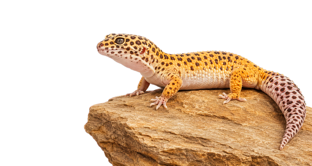
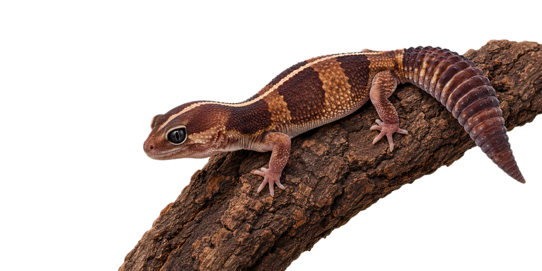
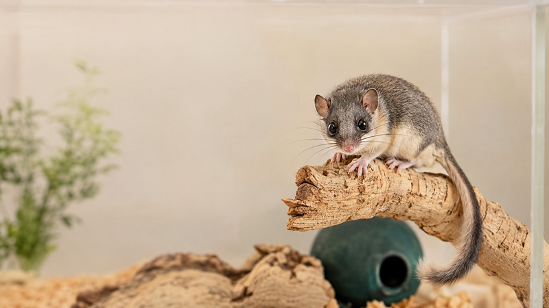
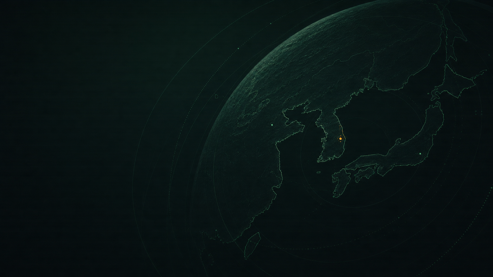

웹 도구 제작
실제 사용 환경에서 필요한 기능을 직접 설계하고 운영합니다.
INDEPENDENT DIGITAL STUDIO
실제로 쓸모 있는 도구와
오래 남는 세계를 만듭니다.
반려동물을 직접 키우며 필요한 웹 도구를 만들고, TIU 세계관과 카드게임을 제작합니다. 기획부터 디자인, 개발, 운영까지 한곳에서 이어갑니다.

WHAT WE MAKE
서로 다른 프로젝트도 결국
‘직접 쓰이는 경험’으로 연결됩니다.
실제 사용 환경에서 필요한 기능을 직접 설계하고 운영합니다.
사육, 브리딩, 건강 기록을 더 정확하고 편하게 만듭니다.
카드, 선택, 기록이 서사로 이어지는 경험을 만듭니다.
TIU를 중심으로 세계, 인물, 사건을 장기적으로 확장합니다.
STUDIO RELEASES
포트폴리오가 아니라 지금도 쓰이고,
계속 업데이트되는 스튜디오의 제품입니다.
멘델 유전 확률, 유전 조합 가이드와 브리딩 관리 기능을 한곳에 담았습니다.
도구 열기표현형과 유전자형을 나눠 보고, 복합 형질과 위험 조합까지 확인합니다.
도구 열기
화이트아웃 치사 조합과 스팅어·제로 계열을 정리하고, 66%·33% 헷까지 함께 보여줍니다.
도구 열기
60가지가 넘는 유전자를 검색으로 찾아 고르고, 스파이더 워블·데저트 암컷 불임 같은 유전 건강 이슈까지 함께 확인합니다. 테스트 중이라 비밀번호를 아는 분만 들어올 수 있습니다.
도구 열기

10개의 질문으로 나와 닮은 모프를 찾는 가벼운 인터랙티브 테스트입니다.
테스트 시작종에 맞는 급여·청소·영양제 주기를 정해두면 오늘 할 일로 뜨고, 캘린더로 내보내 폰에서 알림을 받습니다. 로그인 후 프리미엄에서 이용합니다.
도구 열기
ORIGINAL IP / KOREAN BRANCH
ORACLE 관측망 아래에서 한국 지부를 지휘하는 SF 카드 내러티브 게임. 하나의 선택이 기지의 생존, 인물 관계, 세계의 진실을 바꿉니다.
NOW IN PRODUCTION
연구실이 아니라 실제로 진행 중인
제작 상태를 간단히 공개합니다.
모바일 UI와 개체 관리 흐름을 다듬고 있습니다.
개체, 급여, 체중, 브리딩 기록을 한 화면으로 연결합니다.
사건, 인물, 기관과 카드 시나리오를 계속 확장합니다.
STUDIO PRINCIPLES
필요에서 시작하고 사용 환경에서 검증합니다.
복잡한 정보도 처음 쓰는 사람이 이해하게 만듭니다.
출시로 끝내지 않고 실제 피드백을 반영합니다.
CONTACT
오류 제보, 프로젝트 문의, 협업 제안은 언제든 환영합니다.